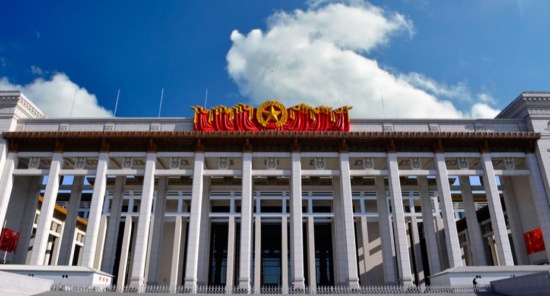

Visit us at:
16 E Chang'an Ave
Dongcheng
China
National Museum of China
About
Location
Hours
Contact
The National Museum of China flanks the eastern side of Tiananmen Square in Beijing, China. The museum's mission is to educate about the arts and history of China. It is directed by the Ministry of Culture of the People's Republic of China. The museum, covering Chinese history from the Yuanmou Man of 1.7 million years ago to the end of the Qing Dynasty (the last imperial dynasty in Chinese history), has a permanent collection of 1,050,000 items, with many precious and rare artifacts not to be found in museums anywhere else in China or the rest of the world. In 2020 it was in second place in the list of most-visited art museums, after the Louvre Museum.
Monday Closed. Tuesday-Sunday 9am–4:30pm
+86 10 6511 6400